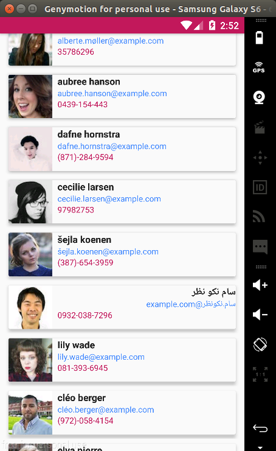

En nuestra aplicación, para realizar la invocación de servicios Web basados en REST utilizaremos
retrofit, que es una liberia que nos permite realizar peticiones HTTP en una forma fácil al simplificar las tareas comunes que estan presente en cualquier peticion Web.
Con el uso de retrofit, incorporaremos a nuestro aplicación la funcionalidad de mostrar amigos pero obteniendolos de un recurso Web. Para ello primero configuremos nuestro listado de amigos remotos en forma similar al listado de amigos locales.
1 - Modifiquemos el layout
fragment_local_friend_list.xml para incorporar dentro del layout el recycler view & textview requeridos.
2 - Ahora, editemos la clase
RemoteFriendListFragment.java para:
- * Definir las referencias del presenter, recycler view, textview y el adaptador
- * Obtener las instancias de los objetos antes mencionados
- * Invocar el método findLocalFriends() del presentador para que temporalmente obtenga el origen de datos de forma local
- * Implementar la interfaz IFriendsView
- * Configurar nuestro recycler view
Lo anterior, permitirá mostrar en pantalla la lista de amigos en forma similar a la consulta de amigos locales, el objetivo de esto es nuevamente revisar los elementos involucrados en la contrucción de un listado. Posteriormente, la lista de amigos se obtendrá de un Web Service.
- It's time to run the project & test it-
3 - Ahora, haremos uso del widget CardView para mostrar en una forma diferente cada uno de los elementos del listado, para esto primero es necesario agregar la dependencia en el archivo
build.gradle
4 - Generemos el layout
card_view_friend.xml que tendrá una distribuición similar al layout
item_view_friend.xml con la diferencia que utilizaremos el widget CardView
Recordemos que en la ingeniería de software la reutilización de código toma un papel muy importante. El requerimiento de mostrar un listado de amigos obtenidos remotamente es similar a la funcionalidad que definimos para mostrar el listado de amigos locales. Por ende, reutilicemos cada una de las clases definidas.
5 - Modifiquemos la clase
FriendsAdapter.java para que ahora reciba el id del layout a utilizar dentro del recycler view.
6 - Actualicemos la instancia del adaptador en la clase
LocalFriendListFragment.java para indicar que utilizaremos el layout
item_view_friend.xml
7 - Actualicemos la instancia del adaptador en la clase
RemoteFriendListFragment.java para indicar que utilizaremos el layout
card_view_friend.xml
- It's time to run the project & test it-
8 - Ahora, llevemos la reutilización de código a nivel del presentador, para ello refactoricemos la clase
FriendsPresenter.java para definir dos métodos que nos permitan obtener el origen de datos de forma local o remoto. Obteniendo como resultado el siguiente contenido:
9 - Ahora, actualicemos la invocación de los métodos en cada fragmento correspondiente:
LocalFriendListFragment.java
RemoteFriendListFragment.java
- It's time to run the project & test it-
Como podemos observar el método findRemoteFriends() temporalmente retorna una lista vacia, esto es correcto ya que en los pasos posteriores aquí será donde invoquemos el Web Service.
Los pasos de la sección anterior, nos permitieron que al seleccionar la opción Web Service del Navigation Drawer mostremos en pantalla un listado de amigos cargados localmente. Ahora, llego el momento de obtener a estos amigos mediante la invocación de un Web Service, para ello primero se requiere incorporar retrofit al proyecto así como conocer la respuesta del Web Service.
Para obtener los amigos en forma remota, haremos uso de
randomuser. Este recurso posee una API libre que nos permite obtener de forma aleatoria información de usuarios. Utilizaremos estos datos para convertir los datos de un usuario en los datos de un Friend.
Por favor, en nuestro browser realicemos la petición de la siguiente URL
http://api.randomuser.me/?results=50 con el objetivo de conocer el formato de respuesta, el cual utilizaremos más adelante.
Ahora realicemos los siguientes pasos para invocar el Web Service y posteriormente mostrar el listado de amigos con la información obtenida.
1 - Primero es necesario agregar las siguientes dependencias en el archivo
build.gradle para disponer de la libreria en nuestro proyecto
La forma en que retrofit realiza las peticiones a determinado recurso, es mediante la declaración de interfaces en las cuales cada método definido representa una invocación a un recurso u operación del Web Service. Lo que debemos definir son principalente cuatro cosas:
- * El método HTTP por el cual se realizará la petición
- * La URL a la cual hará la petición
- * El tipo de la respuesta
- * Y los parámetros requeridos
En nuestro ejemplo, la petición la realizaremos mediante el método GET, como tipo de respuesta será propiamente el cuerpo de la petición y en este momento no contamos con algún parametro. Es importante mencionar que la URL que se especifica dentro de la anotación del método seŕa concatenada a una URL base que definiremos posteriormente.
2 - Con base a lo anterior, definamos la interfaz
FriendsApi.java la cua encapsulará las operaciones a realizar sobre nuestro recurso Friend (para nuestro ejemplo, solo se requiere la busqueda de amigos)
Comunmente en una aplicación móvil existen diversos recursos, es decir, diversos Web Services en relación a nuestro modelo. Por ello, es una buena práctica contar con una clase de configuración en la cual especifiquemos la configuración básica de retrofit así como definamos cada uno de los servicios a requerir para los diversos recursos.
3 - Para nuestro ejemplo, definamos la interfaz
RandomUserApi.java en la cual:
- * Definamos la URL base
- * Configuremos la instancia de retrofit
- * Indiquemos la construcción los servicios necesarios para las peticiones Web
4 - Ahora, es tiempo de invocar el API en el metodo findRemoteFriends del presentador. Por favor implementemos el código siguiente, el objetivo es visualizar que la respuesta que recibimos corresponde al json que observamos en el browser al hacer la petición de la URL antes indicada.
5 - Modifiquemos la clase
RemoteFriendListFragment.java para llamar a la configuración del recycler view una vez cargue la vista
6 - Modifiquemos la clase
FriendsAdapter.java para evitar un crash de la aplicación al intentar mostrar en primera instancia una lista nula (esto debido a que la lista remota se obtendrá una vez se termine la petición HTTP ejecutada en un hilo aparte de la aplicación)
- It's time to run the project & test it-
7 - Ahora, es momento de recuperar la información existente en el json para construir a cada uno de nuestros amigos. Actualicemos la clase
FriendsPresenter.java para incorporar un método que nos permita realizar un parser entre la respuesta json obtenida hacia los objetos que requerimos en nuestra lista e invocar este dentro de la respuesta exitosa de la petición http.
- It's time to run the project & test it-
Material Design recomienda implementar ciertos comportamientos en nuestra aplicación al momento de realizar scroll sobre listados, estas comportamientos se definen el siguiente
link.
Modifiquemos el comportamiento de nuestro toolbar para mostrar u ocultar el mismo cuando el usuario realice scroll sobre la lista de amigos. Para ello se requeire modificar los siguientes dos archivos:
1- Modifiquemos la propiedad app:layout_scrollFlags del toolbar definido en el archivo
app_bar_main.xml
2 - Definamos el color primario al barra de notificaciones ya que de no hacerlo tendremos una transparencia hacia el toolbar, con lo cual aún será visible para el usuario.
values-21/style.xml
- It's time to run the project & test it-

REST API
Consumo de un REST API
Con el uso de retrofit, incorporaremos a nuestro aplicación la funcionalidad de mostrar amigos pero obteniendolos de un recurso Web. Para ello primero configuremos nuestro listado de amigos remotos en forma similar al listado de amigos locales.
1 - Modifiquemos el layout fragment_local_friend_list.xml para incorporar dentro del layout el recycler view & textview requeridos. 2 - Ahora, editemos la clase RemoteFriendListFragment.java para:
Lo anterior, permitirá mostrar en pantalla la lista de amigos en forma similar a la consulta de amigos locales, el objetivo de esto es nuevamente revisar los elementos involucrados en la contrucción de un listado. Posteriormente, la lista de amigos se obtendrá de un Web Service.
- It's time to run the project & test it-
Recordemos que en la ingeniería de software la reutilización de código toma un papel muy importante. El requerimiento de mostrar un listado de amigos obtenidos remotamente es similar a la funcionalidad que definimos para mostrar el listado de amigos locales. Por ende, reutilicemos cada una de las clases definidas.
5 - Modifiquemos la clase FriendsAdapter.java para que ahora reciba el id del layout a utilizar dentro del recycler view. 6 - Actualicemos la instancia del adaptador en la clase LocalFriendListFragment.java para indicar que utilizaremos el layout item_view_friend.xml 7 - Actualicemos la instancia del adaptador en la clase RemoteFriendListFragment.java para indicar que utilizaremos el layout card_view_friend.xml
- It's time to run the project & test it-
LocalFriendListFragment.java RemoteFriendListFragment.java
- It's time to run the project & test it-
Configuración de Retrofit
Para obtener los amigos en forma remota, haremos uso de randomuser. Este recurso posee una API libre que nos permite obtener de forma aleatoria información de usuarios. Utilizaremos estos datos para convertir los datos de un usuario en los datos de un Friend.
Por favor, en nuestro browser realicemos la petición de la siguiente URL http://api.randomuser.me/?results=50 con el objetivo de conocer el formato de respuesta, el cual utilizaremos más adelante.
Ahora realicemos los siguientes pasos para invocar el Web Service y posteriormente mostrar el listado de amigos con la información obtenida.
1 - Primero es necesario agregar las siguientes dependencias en el archivo build.gradle para disponer de la libreria en nuestro proyecto La forma en que retrofit realiza las peticiones a determinado recurso, es mediante la declaración de interfaces en las cuales cada método definido representa una invocación a un recurso u operación del Web Service. Lo que debemos definir son principalente cuatro cosas:
- * El método HTTP por el cual se realizará la petición
- * La URL a la cual hará la petición
- * El tipo de la respuesta
- * Y los parámetros requeridos
En nuestro ejemplo, la petición la realizaremos mediante el método GET, como tipo de respuesta será propiamente el cuerpo de la petición y en este momento no contamos con algún parametro. Es importante mencionar que la URL que se especifica dentro de la anotación del método seŕa concatenada a una URL base que definiremos posteriormente.2 - Con base a lo anterior, definamos la interfaz FriendsApi.java la cua encapsulará las operaciones a realizar sobre nuestro recurso Friend (para nuestro ejemplo, solo se requiere la busqueda de amigos) Comunmente en una aplicación móvil existen diversos recursos, es decir, diversos Web Services en relación a nuestro modelo. Por ello, es una buena práctica contar con una clase de configuración en la cual especifiquemos la configuración básica de retrofit así como definamos cada uno de los servicios a requerir para los diversos recursos.
3 - Para nuestro ejemplo, definamos la interfaz RandomUserApi.java en la cual:
- * Definamos la URL base
- * Configuremos la instancia de retrofit
- * Indiquemos la construcción los servicios necesarios para las peticiones Web
4 - Ahora, es tiempo de invocar el API en el metodo findRemoteFriends del presentador. Por favor implementemos el código siguiente, el objetivo es visualizar que la respuesta que recibimos corresponde al json que observamos en el browser al hacer la petición de la URL antes indicada. 5 - Modifiquemos la clase RemoteFriendListFragment.java para llamar a la configuración del recycler view una vez cargue la vista 6 - Modifiquemos la clase FriendsAdapter.java para evitar un crash de la aplicación al intentar mostrar en primera instancia una lista nula (esto debido a que la lista remota se obtendrá una vez se termine la petición HTTP ejecutada en un hilo aparte de la aplicación)- It's time to run the project & test it-
- It's time to run the project & test it-
mostrar / ocultar toolbar
Modifiquemos el comportamiento de nuestro toolbar para mostrar u ocultar el mismo cuando el usuario realice scroll sobre la lista de amigos. Para ello se requeire modificar los siguientes dos archivos:
1- Modifiquemos la propiedad app:layout_scrollFlags del toolbar definido en el archivo app_bar_main.xml
2 - Definamos el color primario al barra de notificaciones ya que de no hacerlo tendremos una transparencia hacia el toolbar, con lo cual aún será visible para el usuario.values-21/style.xml
- It's time to run the project & test it-